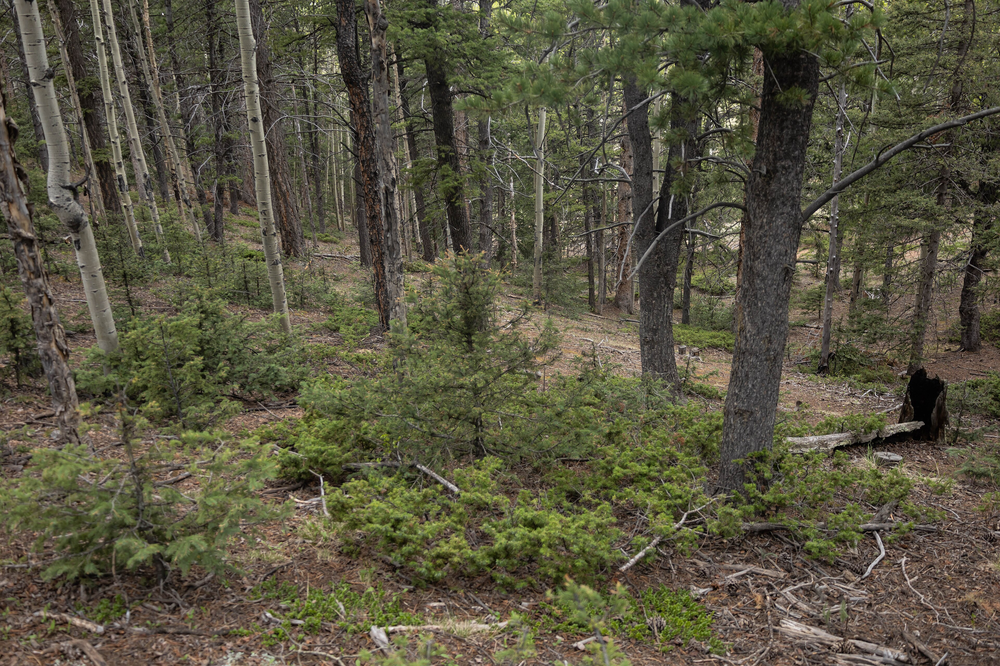

The Buyer's Guide
Eight steps, from deciding which side of Ute Pass suits you through to the keys. Written for this market specifically, because a mountain parcel and a new build in the Springs are not the same purchase.
Two Markets,
Two Sets Of Questions
Most buyer guides describe a generic purchase. This one does not, because almost every client I work with is choosing between two genuinely different places to live, and the questions that protect you in one of them are not the questions that matter in the other.
Up the pass you are buying land, water and access as much as you are buying a house. Down in the Springs you are buying into a builder, a school assignment and a district structure. I work both sides, so you get the right checklist for whichever one you land on. More on why I work both markets.
If you are selling something before you buy, read this alongside the Seller's Guide, because up here those are usually one move rather than two. If you are buying to rent out, the management side is the same office.
How I Work With Buyers
Both sides of the pass
I live and office in Woodland Park and work the north Springs market weekly. You do not have to pick your agent before you pick your market.
Land, well and septic literacy
Yield tests, water quality, septic permits, legal access and whether a parcel can be split. In Florissant and Divide this is most of the diligence.
Negotiation past the price
Terms, timelines and concessions usually decide a competitive offer. I would rather win on structure than on an extra ten thousand dollars.
Still here after closing
If the plan later becomes renting it out, my management operation is the same office. Most buyers never need that. The ones who do are glad it exists.
Decide which side of the pass
This is the decision that shapes everything after it. Teller County means land, quiet, well and septic, and a real winter. North Colorado Springs means newer construction, District 20 schools, HOA or metro district structures, and a shorter commute. Thirty minutes separates them. I would rather drive you through both before you narrow it down. Start with the nine communities if you have not picked a side yet.

Get your financing settled first
A pre-approval letter, not a pre-qualification. Up here it matters more than most places, because some lenders are uneasy about large parcels, older well systems or homes with limited comparable sales. Finding that out after you are under contract costs you the house.

Set the search up properly
We build a saved search that actually reflects what you want, including the things buyers forget to filter on, like acreage, well type, garage capacity and whether the road is county maintained. Then new listings reach you the morning they hit, not a week later. You can start searching now and refine it with me later.

Tour with the right questions
In Teller County I want to see the driveway grade, the aspect of the lot, the wood stove and the water. In the Springs I am looking at builder finish quality, the metro district mill levy and where the covenants bite. Same tour, two completely different checklists. Compare Divide against Wolf Ranch to see how far apart they are.

Write an offer that holds together
Price is one term among many. Closing date, inspection windows, seller concessions, what conveys and how the earnest money is structured all move the odds. In a multiple offer situation those terms are usually what decides it, not another few thousand dollars.

Inspect for the property you are buying
A general inspection is the floor. On a mountain parcel you also want a well yield and water quality test, a septic inspection, and a look at defensible space and the roof. Well permits and records are held by the Colorado Division of Water Resources, and on-site wastewater permits by Teller County. On a newer build in the Springs the inspection is different and the builder warranty conversation matters more.

Appraisal, insurance and the loan
Rural appraisals take longer and can come in oddly when there are few comparable sales. Insurance is its own conversation at altitude, because wildfire risk scoring has moved a great deal in the last few years. Start the insurance quote early rather than the week before closing.

Final walkthrough and closing
We walk the property once more with the contract in hand, confirm the agreed repairs and that everything that was supposed to stay is still there, then close at the title company. After that, if the plan was ever to rent it out, my management side is already down the hall.
Start With The Places
Nine communities, five up the pass and four on the north side of the Springs. Each one has a page covering what it is like to live there and what I would check before you buy, plus current listings.
Frequently Asked
It depends entirely on the loan. Conventional financing can start well below twenty percent, VA loans can reach zero down for eligible buyers, which matters here given Fort Carson, Peterson and the Academy, and USDA financing covers some rural parts of Teller County. The number worth planning around is the total cash to close, not the down payment alone.
That they are systems with a lifespan, and both should be inspected and tested independently of the general home inspection. You want the well yield in gallons per minute, a water quality test, the age and condition of the septic, and the permit history. None of it is unusual up here. It is only a problem when nobody checks. The Colorado Division of Water Resources holds the permit record for every legal well in the state.
On some properties, yes. A steep north-facing driveway that holds ice, or a home on a county road that is low on the plow priority list, changes daily life from November to April. I ask about it on every mountain showing because a buyer touring in July will not think to.
Teller County is served by Woodland Park RE-2 and Cripple Creek-Victor RE-1. The north side of Colorado Springs is largely Academy District 20, which is what draws a lot of families down the pass. Assignments are by address and boundaries change, so confirm the specific property with Woodland Park School District RE-2 or Academy School District 20 rather than trusting the neighborhood name.
Often, and the pattern is consistent. People arrive with a picture in their head of mountain living and have not yet weighed it against a shorter commute and newer construction. Both are good answers. They are just answers to different questions, and the community pages are the fastest way to feel the difference. Past clients have gone both ways.
We will go through buyer representation and how compensation works in writing before you tour anything, so there are no surprises later. It has changed across the industry recently and I would rather over-explain it at the start.
Buying And Selling
At The Same Time?
Most moves between the mountain and the Springs are one coordinated transaction, not two. The Seller's Guide covers the other half, including what your current home is worth today.
Read The Seller's GuideLet's Go Look
At Some Houses
Tell me roughly what you are after and which direction you are leaning, and I will put a real search together. Touring both sides of the pass early saves months later.
Start The Conversation